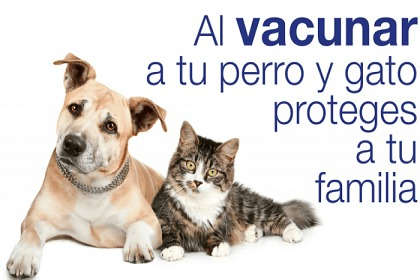
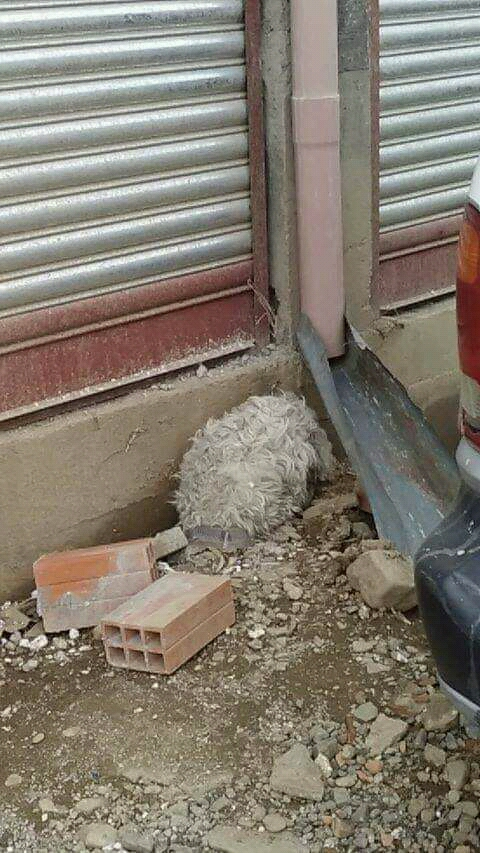
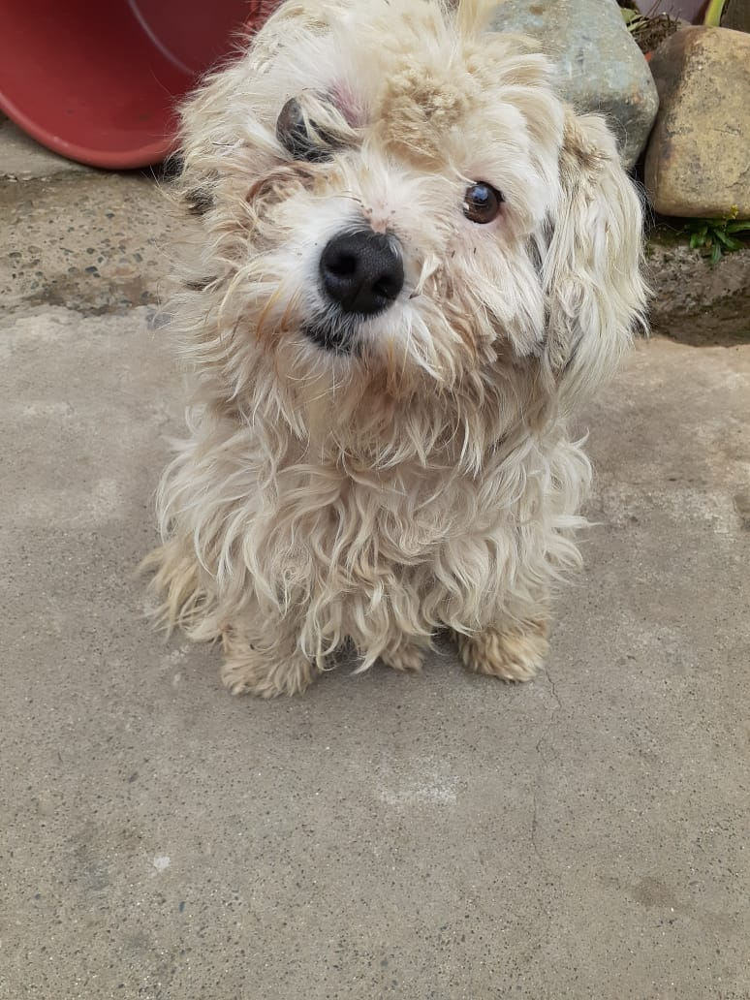

El carnet de Vacunación
Tener un perro es igual a responsabilidad y parte de ello recae en asegurar al animal una vida de cuidados físicos y psicológicos que fortalezcan su salud. Las vacunas son un indispensable para que los perros crezcan con menos riesgo a enfermar y hoy veremos los detalles al respecto. Es importante que junto al veterinario…

Colabora
“Si precisas una mano, recuerda que yo tengo dos”. San Agustín de Hipona
Hay muchas veces que queremos ayudar, hacer cosas, colaborar…pero no sabemos muy bien cómo hacerlo, esto es muy fácil y hay muchas posibilidades:
- Puedes hacerte socio y ayudar con una cantidad mensual al mantenimiento de nuestros animales
- Puedes ser padrino de alguno de los animales que hay en el refugio y disfrutar de ello: ir a pasearlos, llevarles regalos, recibir noticias suyas…
- Puedes hacerte voluntario y dedicar el tiempo que puedas a ayudar con las labores del refugio: ir a limpiar, llevar perros al veterinario, pasearlos, colaborar en el rastro…
- Puedes hacer donativos puntuales y de la cantidad que quieras. Un grano no hace granero, pero ayuda al compañero!!!!
- Ayúdanos a difundir nuestro mensaje de amor y protección hacia los animales y sobre todo de respeto por su vida.
Pagan nuestros errores y malas decisiones y eso lo podemos cambiar entre todos!!
Recuerdos
facebook
Quienes Somos


Contacto